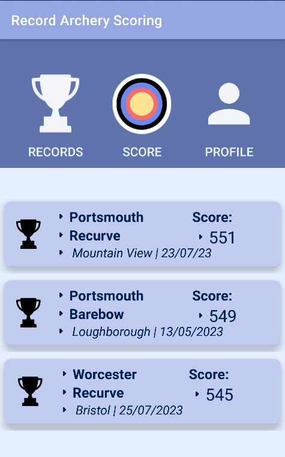
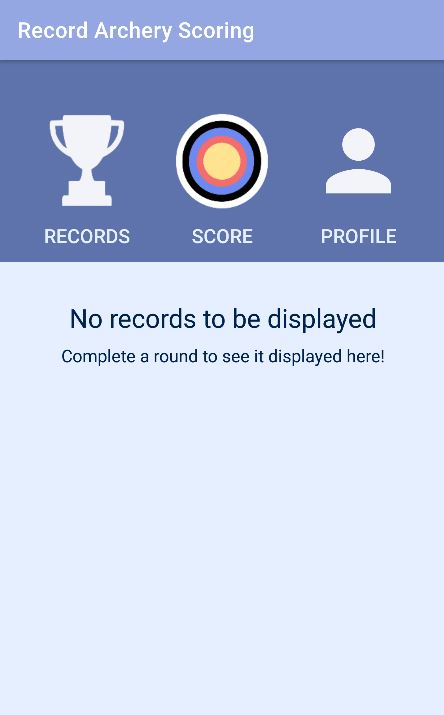
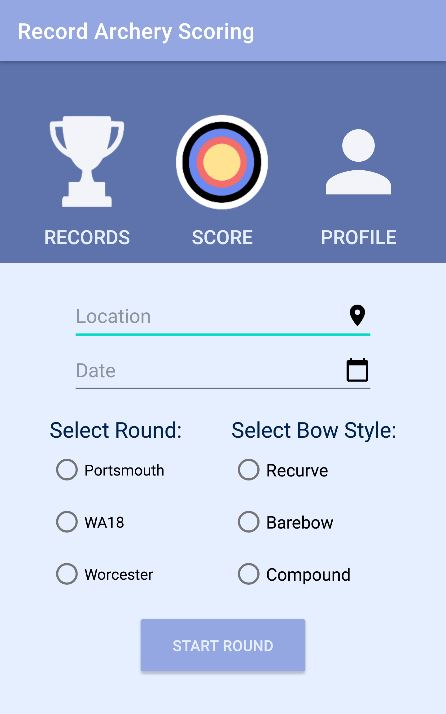
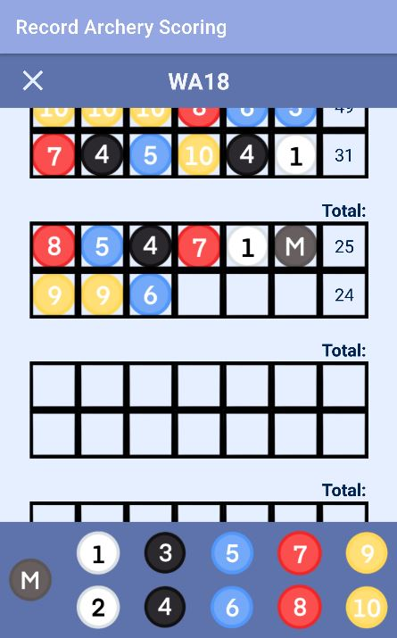
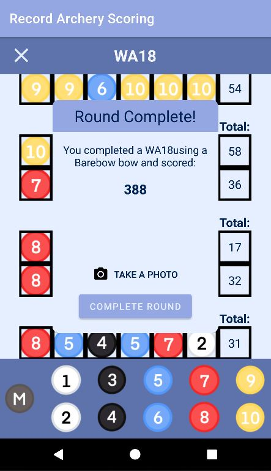

Introduction
Record Archery is an application for archers to score rounds as they shoot and track their progress within the sport.
The applications allows users to record three different types of archery round with one of three different types of bow.
- Bow Styles:
- Recurve - the type of bow used in the Olympic Games, characterised by the use of a sight and stabilisers to aid the archer.
- Barebow - the type of bow most commonly depicted in media (Robin Hood, Brave etc.) uses no sight or additional shooting aids.
- Compound - the most advanced type of bow, often used for hunting. Features a system of pulleys to help the archer draw the bow and deliver an incredibly powerful shot.
- Rounds:
- Portsmouth - an indoor round consisting of 60 arrows at a 60cm diameter face from 20 yards.
- WA18 - an indoor round consisting of 60 arrows at a 40cm diameter face from 18 metres.
- Worcester - an indoor round consiting of 60 arrows at a special black and white target from 20 yards.
Records Page
The homepage is the first screen the user will see after launching the application. Here the user can see all of their previously recorded archery rounds in chronological order.
All rounds and the information associated with them are stored in a local SQL database. If the user has no records stored, a message prompting the user as such will be displayed.
Each card displays all of the information about each round, including a small trophy icon if the score is a new record for the round and bow style.
Setting Up a Round
Before beginning a round, all the information associated with the round must be entered.
- Information Required:
- Location
- Date
- Type of round
- Bow style
If location permissions have been enabled, the application will complete your location with your current location.
Active Scoring Page
The name of the round is displayed at the top of the page.
The user can end the round at any time by pressing the 'X' icon, however the round will not be saved if incomplete.
This page is designed to replicate real world archery score sheets, used in real archery competitions. Each arrow has a box for the score to be written in, with arrows grouped into dozens. All the rounds accessible through the application comprise of five dozen arrows, meaning there are five of these dozen frames.
At the end of each row of six, the total for those six arrows will be summed automatically as the user scores.
The archer simply presses the corresponding button on the bottom of the screen for their score and the sheet will be automatically filled in.
Once the round is complete a modal will appear with the user's results
From here the user can finish the round by pressing either 'X' or 'Complete Round' and the round will be added to the database. The user can also open the camera app, to take a commemorative picture.
Profile Page
The profile page allows the user to change the permissions associated with the application.
- The user can change:
- Location permission
- Notification permission and the time the daily notification is sent
- Camera permission